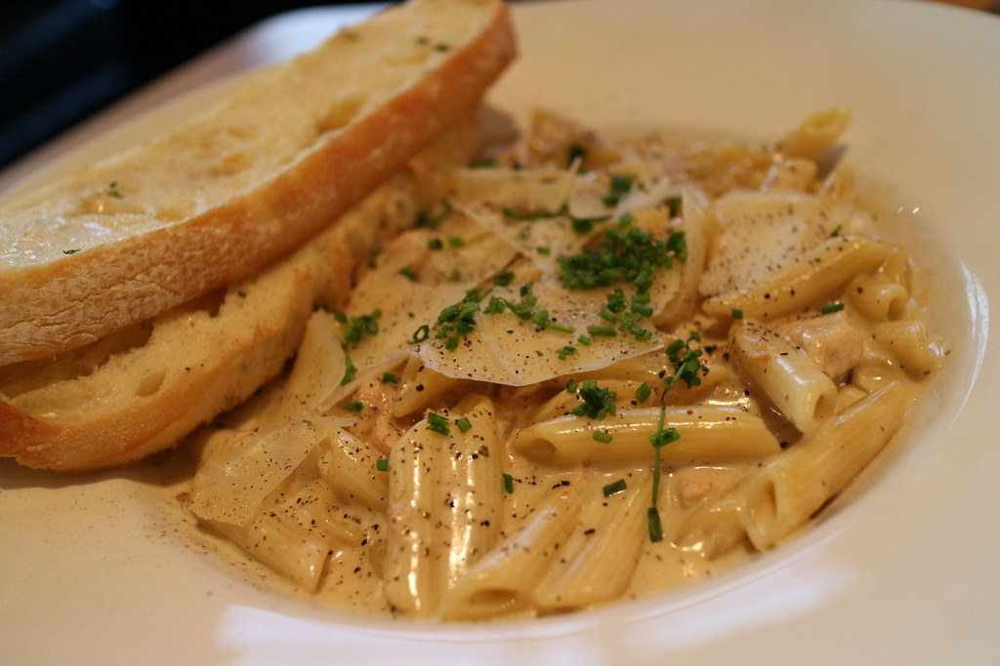

Description:
Learn how to prepare a delicious chicken alfredo dish.
Ingredients
- Fettuccine pasta
- Chicken
- Butter
- Milk
- Garlic
- Fresh broccoli
Steps
- Bring a large pot of lightly salted water to a boil. Add pasta, and cook for 8 to 10 minutes, or until al dente; drain.
- While pasta is cooking, melt cream cheese and butter in a skillet over low heat. Stir until smooth. Stir in milk, and season with garlic powder, salt, and pepper. Simmer for 3 minutes, or until thickened, stirring constantly.
- Mix in chicken, broccoli, zucchini, and red pepper. Cook 3 minutes over medium heat, then reduce heat, and simmer 5 minutes, or until vegetables are tender. Serve over fettuccine.
Return to homepage